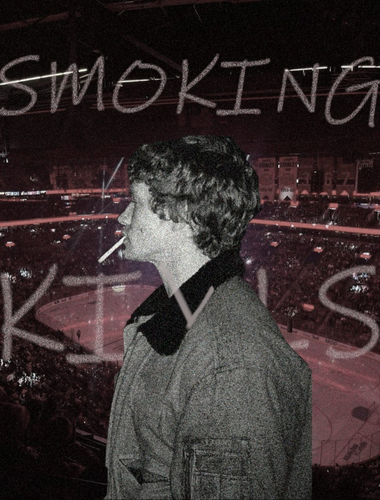
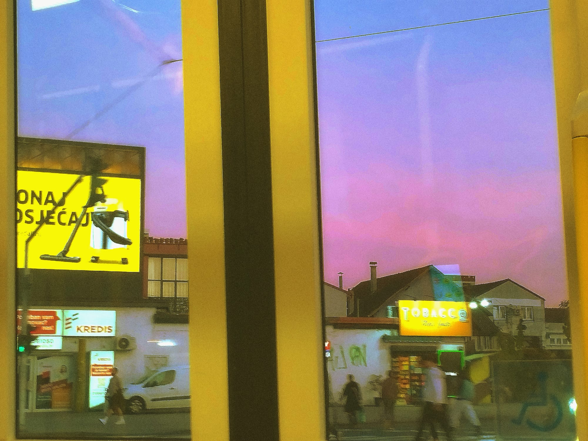
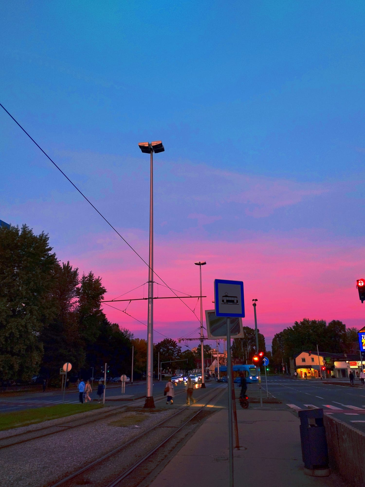
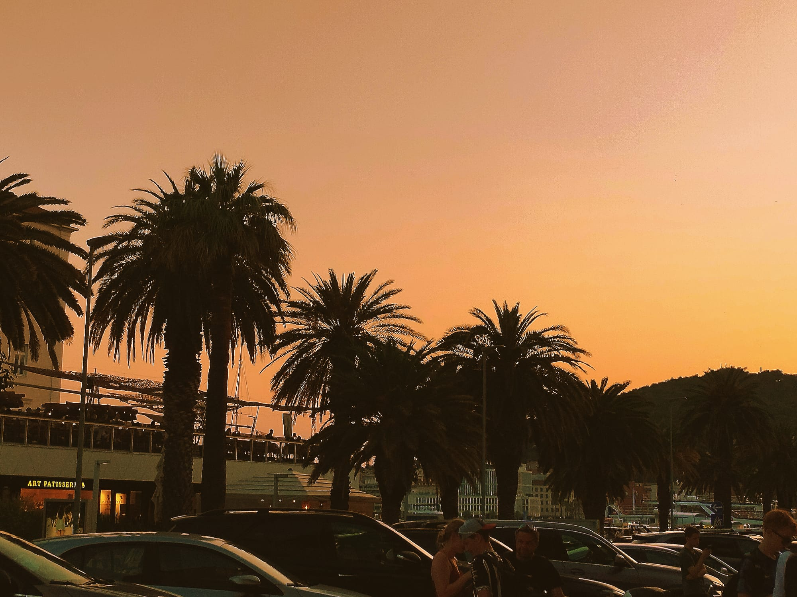
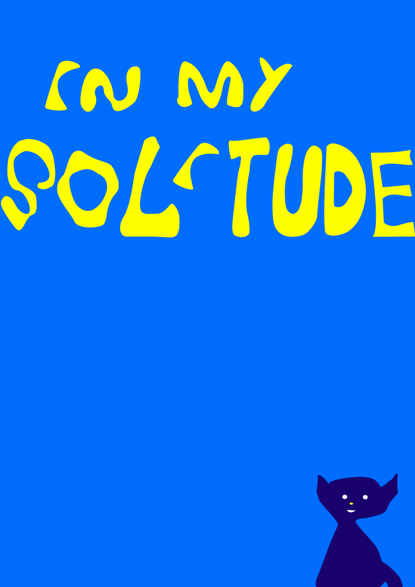

Zovem se Katarina Pehar, studentica sam Grafičkog fakulteta Sveučilišta u Zagrebu. Upisala sam baš ovaj studij jer me zanima grafički dizajn, grafička tehnologija, fotografija i video montaža. Uz navedeno, bavim se glazbom i pisanjem. Smatram da je vrlo važno njegovati interese koje smo imali kao djeca i te interese pretvoriti u posao.
    Cool video: check it out